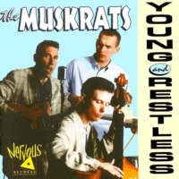

the Muskrats - Young And Restless (Album, 1997)
01 - Sleeping Beauty (2:27)
02 - The Only Thing (4:14)
03 - Good Lookin' Woman (3:00)
04 - I Told You All Along (2:08)
05 - Ain't That Just (3:20)
06 - Rocking On The Guitar (1) (2:20)
07 - Muskrat (2:48)
08 - Had A Lotta Lovin' (2:27)
09 - You're Too Much (3:34)
10 - Ride My Rod (2:17)
11 - Rock Strong (2:58)
12 - Driftaway (2:37)
13 - I'm Leavin' (2:51)
14 - Linda (1:45)
15 - Venus (3:29)
16 - The Young And The Restless (2:51)
17 - Rocking On The Guitar (2) (2:22)
© Nervous Records :: [NERCD 091]
Notes
Review
145/366 (Project 366)
Rockabilly Rock with youth fantasy and really restless.